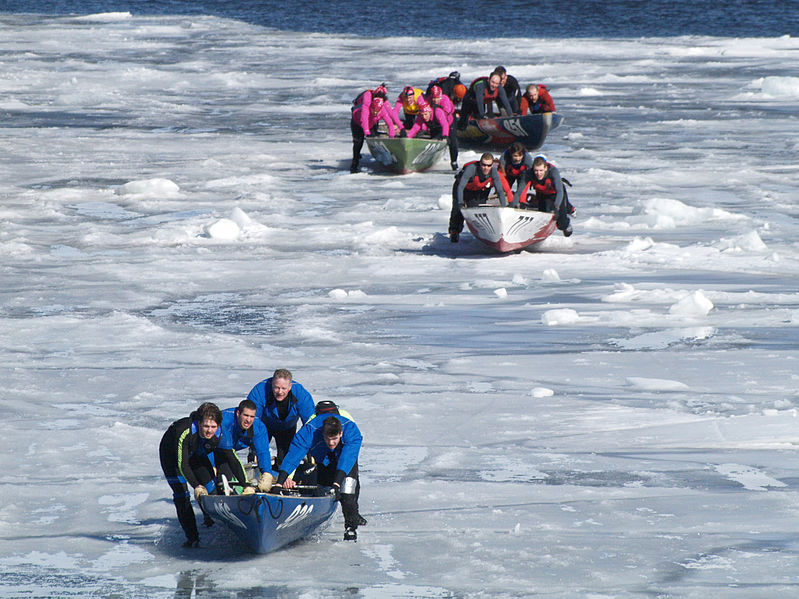

Originally a means of winter transport between the islands and shores of the Saint Lawrence River, ice canoeing is now a sport. Crews of five athletes alternately push their canoe across the ice on the frozen parts of the river, and row in a river with currents of four knots, tides of over 15 feet, and ice blocks weighing a few tonnes blown by the wind. Shoes with bolts screwed to the bottom are worn to keep their traction on the ice.
